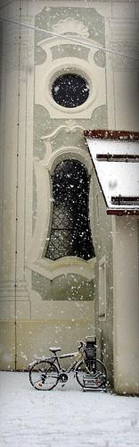
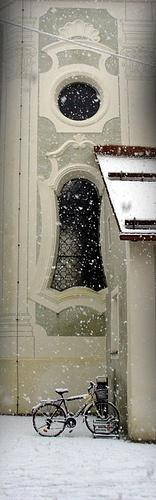
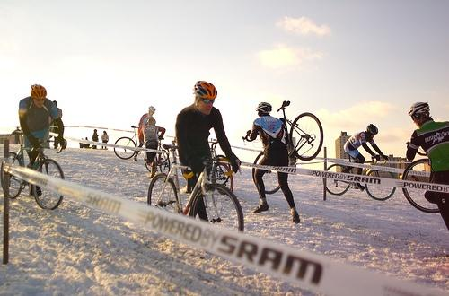
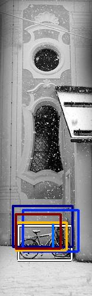
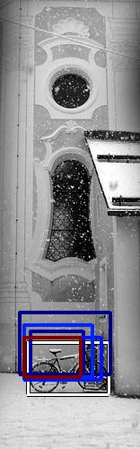
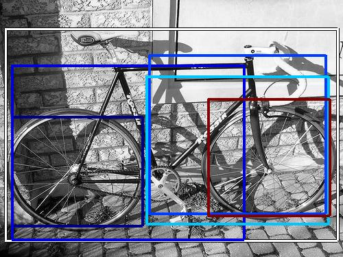

0.703626

0.740260

0.799152

0.800443

0.822391

0.825493

0.832827

0.842892
0.849952

0.874661
| Target image  | 0.703626 | 0.740260 | 0.799152 | 0.800443 | 0.822391 | 0.825493 | 0.832827 | 0.842892 |  0.849952 | 0.874661 |
| Target image  |  12484.125977 |  9245.026367 |  8815.352539 |  7556.443848 |  6161.230469 |  5338.693848 |  4894.477051 |  4864.604980 |  3506.588135 |  3245.237549 |
| Target image  |  8412.902344 |  8341.092773 |  7074.256836 |  6996.767578 |  5351.331543 |  4737.375000 |  4593.919922 |  4548.864258 |  4420.583984 |  4355.780273 |
Target image |  13928.325195 |  10559.933594 |  10252.629883 |  10120.125977 |  10011.866211 |  9160.980469 |  6679.835938 |  6168.140137 |  5597.654297 |  5375.598633 |
Target image |  27454.105469 |  11151.984375 |  8526.679688 |  7436.375977 |  7331.722656 |  7225.465820 |  6884.871582 |  6779.329102 |  6423.637695 |  6125.821777 |